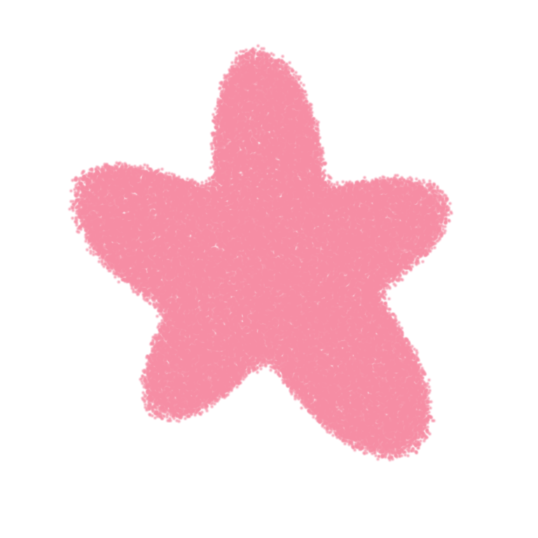

Guangda Ji, Qimin Chen, Qinchan Li, Mingrui Zhao, Kai Wang, Hao Zhang
Sometimes, it is even impossible to segment and choose a valid sector to replicate...


We don't know the transformation law for latents!
We can assume that for structured latents, the transformation law is also linear,

Spatial-Transform Latent Mapper